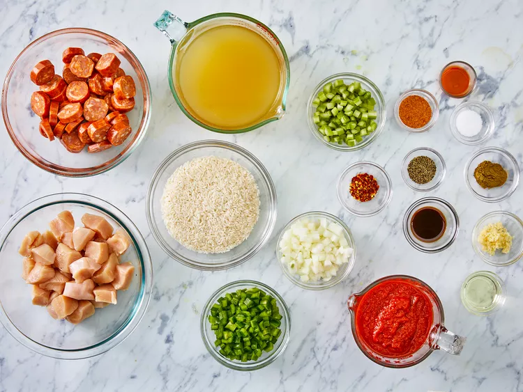
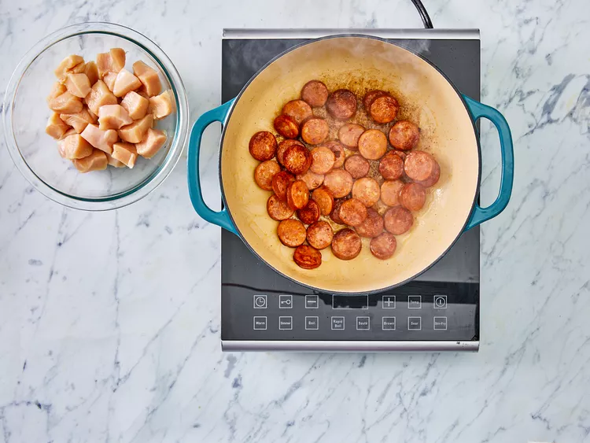
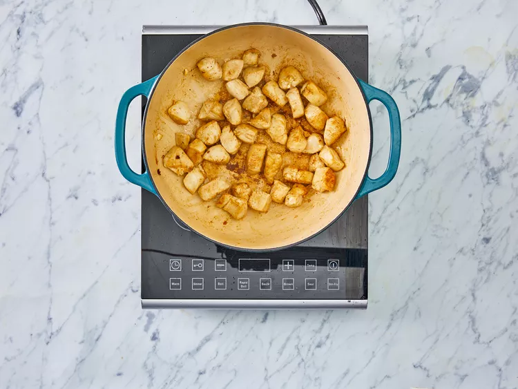
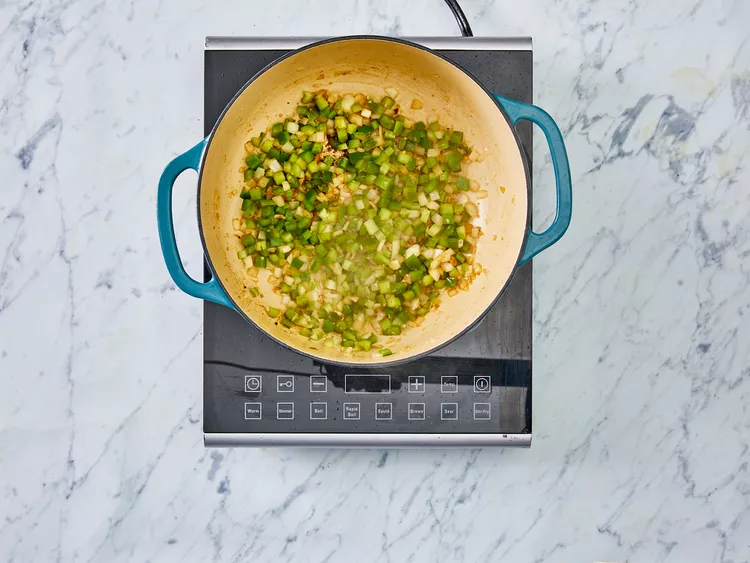
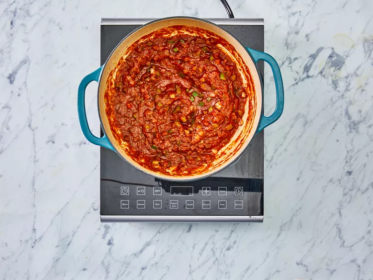
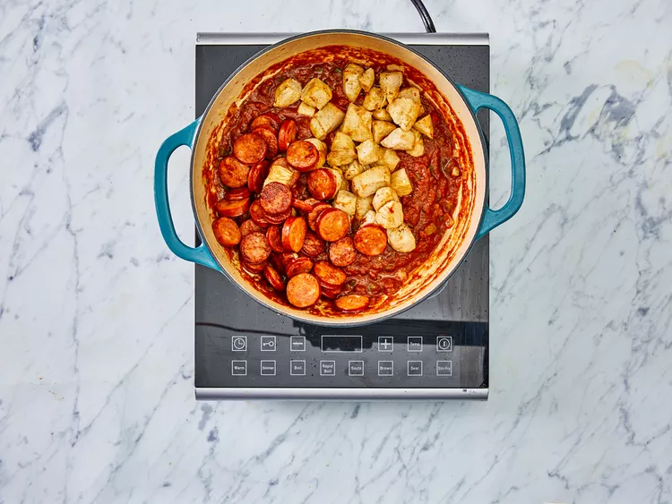
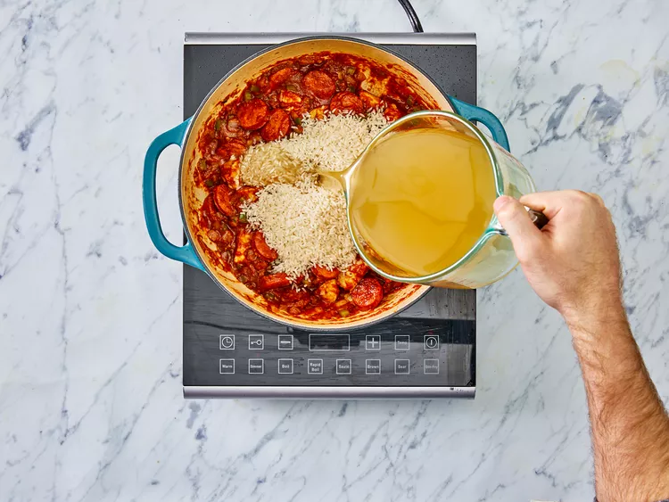
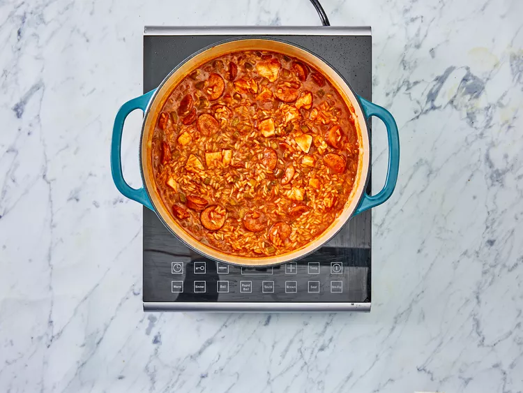

The best Jambalaya

Jambalaya is a one-pot dish that's made with rice, meat or seafood, and vegetables.
With French and Spanish influences, jambalaya is quite similar to >paella.
The name "jambalaya" likely comes from the Provençal word "jambalaia,"
which means mishmash.
Jambalaya Ingredients
These are the ingredients you'll need to make the best jambalaya of your life:
- Oil: Chicken and andouille sausage are sautéed in peanut oil.
- 2 tablespoons peanut oil, divided
- Sausage: Opt for andouille sausage for the most authentic jambalaya.
- 10 ounces andouille sausage, sliced into rounds
- Chicken: Cut one pound of boneless, skinless chicken breasts into 1-inch pieces.
- 1 pound boneless skinless chicken breasts, cut into 1 inch pieces
- Spices and seasonings: This chicken and sausage jambalaya is flavored with:
Cajun seasoning, fresh garlic, red pepper flakes, salt, pepper, hot sauce,
Worcestershire sauce, and file powder.
- 1 tablespoon Cajun seasoning
- ½ teaspoon red pepper flakes
- ½ teaspoon ground black pepper
- 1 teaspoon salt
- ½ teaspoon hot pepper sauce
- 2 teaspoons Worcestershire sauce
- 1 teaspoon file powder
- Vegetables: You'll need an onion, green bell peppers, and celery.
- 1 (16 ounce) can crushed Italian tomatoes
- 3 cloves garlic, minced
- 2 stalks celery, diced
- 1 small green bell pepper, diced
- 1 onion, diced
- Rice: Opt for plain white rice for this jambalaya recipe.
- 1 ¼ cups uncooked white rice
- Broth: Use store-bought or homemade chicken broth to cook the rice.
How to Make Jambalaya
Step 1
Gather all ingredients.

Step 2
Heat 1 tablespoon of peanut oil in a large heavy Dutch oven over medium heat.
Season the sausage and chicken pieces with Cajun seasoning.
Sauté sausage until browned. Remove with slotted spoon, and set aside.

Step 3
Add 1 tablespoon peanut oil, and sauté chicken pieces until lightly browned
on all sides. Remove with a slotted spoon, and set aside.

Step 4
In the same pot, saute onion, bell pepper, celery, and garlic until tender

Step 5
Stir in crushed tomatoes, and season with red pepper, black pepper, salt,
hot pepper sauce, Worcestershire sauce, and filé powder.

Step 6
Stir in chicken and sausage. Cook for 10 minutes, stirring occasionally.

Step 7
Stir in the rice and chicken broth.

Step 8
Bring to a boil, reduce heat, and simmer for 20 to 25 minutes,
or until liquid is absorbed.

Step 9
Serve and enjoy!